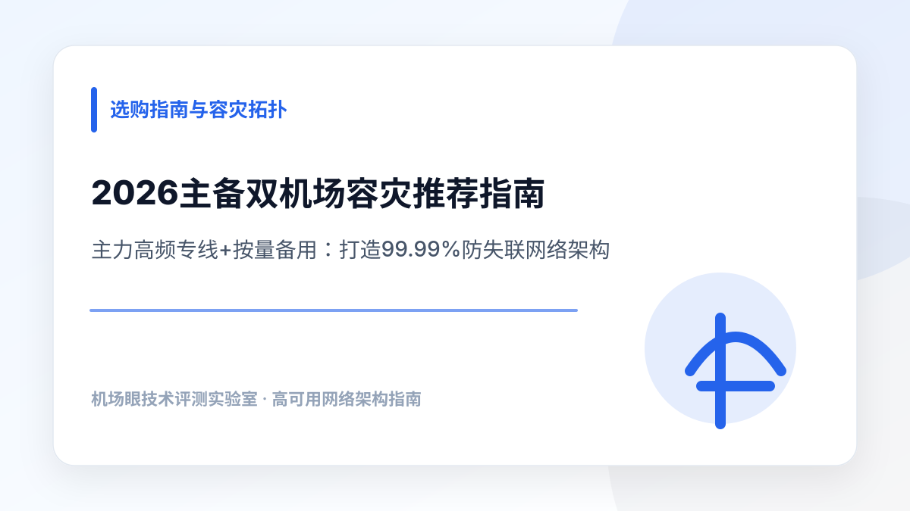

2026主备双机场容灾推荐指南：如何用“主力高频专线+低廉按量备用”打造99.99%防失联网络拓扑？
在跨国科研、AI交互与跨境电商的日常工作流中，任何单一节点的阻断都可能导致业务瞬间停摆。本篇指南从网络工程容灾架构出发，深度解构单一机场的单点故障隐患，详解“高频IEPL专线+低廉不限时按量备用”的黄金性价比配置方案，并提供完整的Clash与Sing-box自动化故障转移（fallback）落地规则。

一、 单点故障（SPOF）的残酷现实：为什么再贵的单一机场也无法保证 100% 不掉线？
在资深出海工程师的字典里，“单一依赖即等于高危故障”。很多初涉跨境网络的用户常常陷入一个典型误区：花费重金购买了一家口碑极佳、甚至标榜“千兆独享”的旗舰专线机场，便误以为从此高枕无忧。然而，在真实的广域网物理层与国际互联网路由环境中，绝对不存在 100% 永不波动的单一商业网络。
剖析现代跨境代理链路，一个完整的网络会话至少穿透了 7 个独立环节：本地系统客户端 -> 本地运营商接入（Last Mile）-> 机场国内入口机房（BGP）-> 跨境物理专线/公网中转 -> 境外落地机房（Egress）-> 目标网站/API网关（如 Cloudflare/AWS）-> 机场订阅管理面板。在这条漫长而脆弱的链条中，任何单一环节发生异常，都将瞬间诱发全局断网：
- 国际海缆突发阻断： 亚太主流海缆（如 APG、TPE、SJC）年均遭遇数次渔船拖网或海底地震刮断，一旦专线物理光纤被迫切换至冷备绕行路由，延迟瞬间从 40ms 飙升至 260ms，并伴随严重拥塞丢包；
- 入口机房网络重保或清洗： 国内骨干网入口机房若遭遇大流量 DDoS 攻击或上游巡检维护，单省入口可能出现数小时黑洞阻断；
- 动态封锁与订阅域名污染： 敏感时段防火墙针对机场前端 API 域名的深度包检测（DPI）封杀，会导致客户端无法及时获取最新节点列表，造成“明明买了套餐却无法刷新节点”的失联窘境。
因此，理性出海的核心决策从来不是寻找所谓“绝对不挂的神仙机场”，而是通过合理的架构设计消灭单点故障。在制定采购决策前，建议系统查阅机场眼首页定期更新的硬核机场推荐权威榜单，建立“主力专线性能”与“备用容灾覆盖”兼顾的双轨采购认知。
二、 “主力专线 + 备用按量”高可用双机场经济学模型
构建防失联双机场拓扑，绝不意味着用户需要承担双倍的月费开销。通过对网络流量特性的精细解耦，我们可以构建极具成本效益的“主力高频包月 + 备用长效按量”黄金模型：
| 拓扑角色定位 | 推荐计费模式 | 底层物理线路架构 | 月度成本预算 | 核心承担工作负载 |
|---|---|---|---|---|
| 主力核心通道 | 包月订阅 (月付/季付) | IEPL / IPLC 纯内网专线 | ¥15.00 ~ ¥25.00 / 月 | 日常 4K/8K 视频、AI流式会话、代码克隆与高频网页交互 |
| 容灾应急备用 | 不限时按量付费 (按需扣费) | 优质 BGP 优化中转 / 备用专线 | ¥10.00 ~ ¥20.00 / 购买一次 (长期有效) | 主力故障时的紧急告警通信、订阅续费、工单提交与轻量办公 |
经济学优势测算： 主力机场选择 15~20 元/月的优质专线，满足每月 100G~200G 的高速大流量吞吐；备用机场则选择支持“流量永不过期、按需扣除”的按量计费套餐（例如 10 元购买 100G 纯流量）。在主力机场正常运转的 98% 时间内，备用机场消耗为零；一旦主力发生跨境光缆波动或维护，客户端自动无缝接管，每小时仅消耗几十兆应急流量。折算下来，一年仅需多投入 10~20 元，即可将全年的网络在线可用率（SLA）从 98.5% 跃升至 99.99%！
在关注链路可用率的同时，不同服务商在晚高峰抗并发能力与实际超售率上的表现差异巨大；若想深入了解服务商真实带宽测速与并发 TCP 握手表现，可参阅另一篇技术深度横评《晚高峰真实带宽与超售率透视实测》。
三、 主流服务商在主备容灾拓扑下的定位横评
基于上述模型，我们在网络工程测试环境中对业内典型服务商的架构特性进行了客观测试，评估其在双机场拓扑中的最佳角色分配：

极连云
全 IEPL 极速专线 · 三网优化
网际快车
不限时按量计费 · 游戏与应急
光速云
原生 IPLC 专线 · 60+ 独立节点四、 客户端容灾分流实操：Clash 与 Sing-box 毫秒级自动故障切换
拥有两家机场的订阅后，绝对不能把节点混合在一起无脑轮询，而是要通过客户端的策略组（Proxy Groups）实现基于健康检查的自动回退（Fallback）。
1. Clash (Verge Rev / Meta 内核) 故障转移配置实操
在 Clash 配置文件中，利用 fallback 策略组绑定主力与备用节点。该策略组会严格按照列表先后顺序使用节点：只要主力节点通过健康探测，所有流量全部走主力；一旦主力连续探测超时，客户端在毫秒级内自动顺延切换至备用节点：
2. Sing-box 客户端中的 urltest / fallback 规则对应
Sing-box 用户可在 outbounds 中声明 urltest 类型组，并合理配置 tolerance（容差）参数，避免因网络轻微抖动造成节点频繁来回震荡跳变：
五、 容灾网络进阶：防失联与 DNS 持久化避坑清单 (FAQ)
1. 为什么不能直接将主备节点配置为 load-balance（负载均衡）？
负载均衡策略会在多个节点之间按照轮询或散列哈希分发连接。主力专线与备用按量节点的出口 IP 属于完全不同的机房与 ASN 自治域。如果将其混入负载均衡，会导致同一个用户的会话在几秒钟内从香港 IP 切换至美国 IP。这对于 OpenAI、Claude、Google 账号以及网银系统是严重的高危行为，极易触发异地登录风控并导致封号。主备方案必须严格使用 fallback（回退） 机制。
2. 主力机场节点全挂了，连订阅也更新不了怎么办？
这是最典型的“母鸡卡在蛋里”死循环。解决之道是“本地订阅离线备份与 DNS 规避”：
- 在本地保存一份备用机场的原始节点链接（如 vless:// 或 ss:// 格式）至记事本中；
- 在客户端 DNS 配置中启用
serve-stale（过期缓存优先响应）策略，确保在网络短暂异常时，客户端仍能使用历史 DNS 缓存直连备用节点； - 将备用机场的官网登录入口加入浏览器书签，一旦主力断网，一键切换备用即可无障碍登录官方面板。
六、 总结：构建韧性出海连接的核心法则
网络的本质是概率性的物理连接，任何追求绝对无故障的单点方案在工程学上都是不切实际的。通过本文介绍的“主力高频专线+低廉按量备用”拓扑，用户只需花费极低边际成本，就能在软件层面构建出抵御光缆中断、机房清洗与敏感期封锁的高可用体系。
更多关于专线架构鉴别、三网优化与高性价比节点方案，欢迎随时回到机场眼核心专区查阅权威公正的机场推荐排选看板，让出海网络始终稳定如磐石。